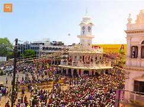

CLOCK TOWER
According to experts, the standard time of the world was determined from Ujjain 300 years ago. For a long time, Ujjain has been considered the centre of time calculation. Moreover, the Tropic of Cancer also passes through the city.
